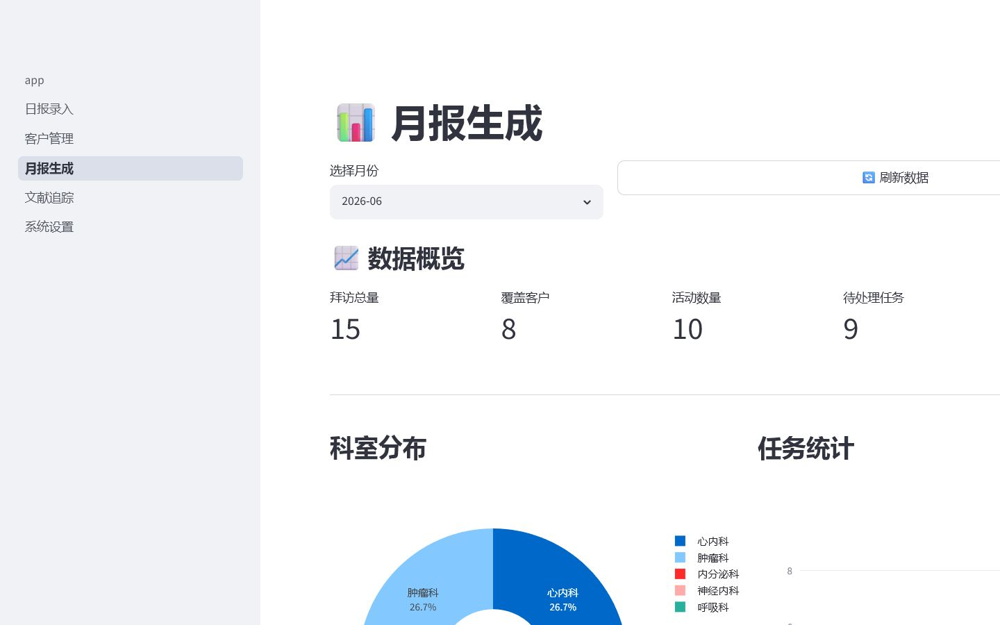
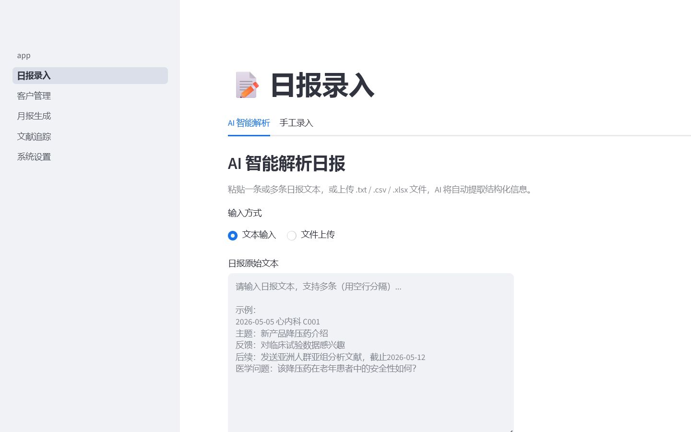
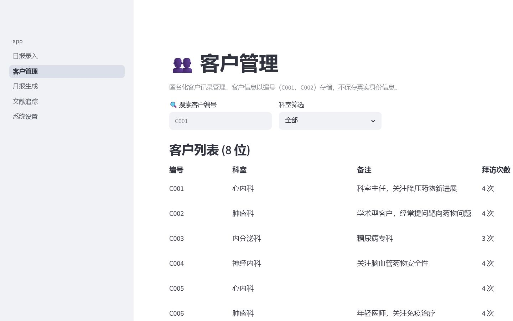
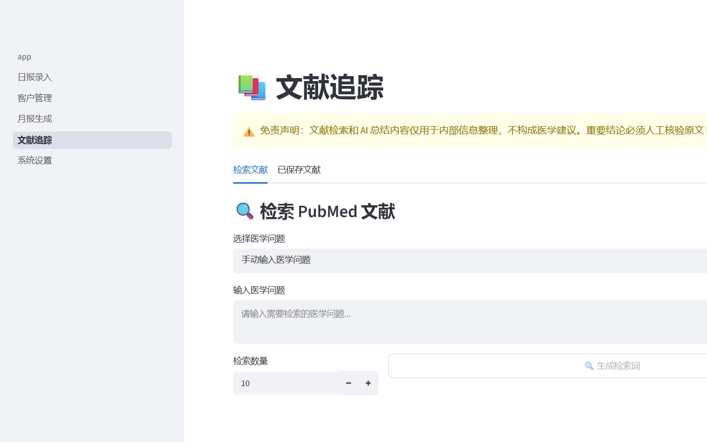

月底需要逐条翻找
日常记录以自然语言保存，缺少统一字段和检索入口，月度汇报时需要重新整理。
AI APPLICATION · PHARMA OPERATIONS
把分散日报转成可检索的结构化数据，连接客户沟通记录、月度统计和公开医学文献追踪。
个人场景复盘项目 · 使用虚构演示数据 · 非信达生物官方项目

01 · PROBLEM
日常记录以自然语言保存，缺少统一字段和检索入口，月度汇报时需要重新整理。
同一客户的信息分散在多份日报中，重复客户、关注主题和待跟进事项难以合并。
客户提出的医学问题需要单独搜索公开文献，检索式、PMID和摘要缺少统一归档。
02 · SOLUTION
03 · EVIDENCE
展示数据全部为虚构内容，不包含真实医生、患者或企业内部资料。
A
支持自然语言、文件上传和手工录入，将日报整理为日期、客户编号、科室、沟通主题、反馈与后续任务。

B
用C001等编号代替真实身份，展示客户历史时间线，并提供疑似重复客户检测与合并记录。

C
自动计算拜访量、覆盖客户、活动数量和待处理任务，并将科室分布、任务状态导出为Excel或Word。
D
根据医学问题生成检索式，通过PubMed E-utilities获取标题、摘要、研究类型、PMID和DOI，并保留来源供人工核验。

04 · OUTCOME
从自身实习中的日报和月报痛点定义MVP范围。
覆盖录入、整理、查询、统计、导出和文献追踪。
采用匿名编号、敏感信息检测和结构化数据模型。
应用可运行、报告可导出、核心逻辑有自动化测试。
05 · BOUNDARY